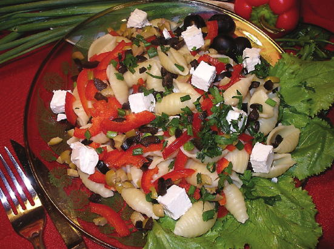
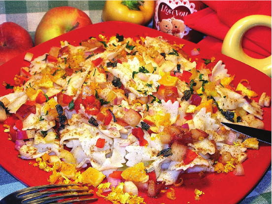
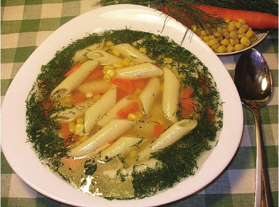
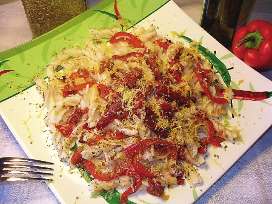
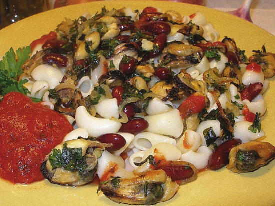
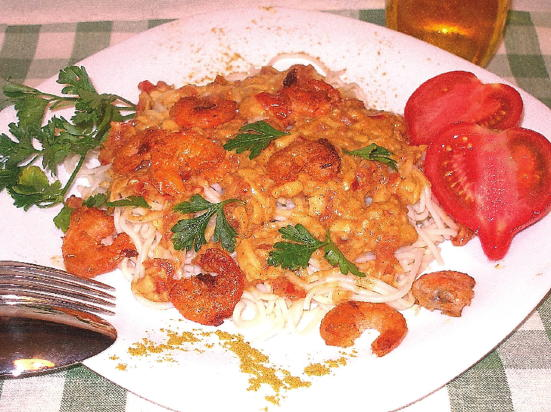
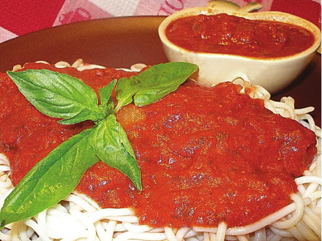
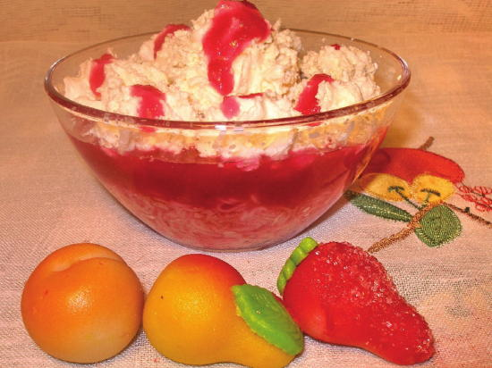

Всем десертам десерт
 Черешня с изюмом, яблоками, апельсинами и йогуртом «Все только начинается!»
Черешня с изюмом, яблоками, апельсинами и йогуртом «Все только начинается!»
• 250 г макарон
• 250 г черешни
• 100 г изюма
• 2 яблока
• 2 апельсина
• 2–3 ст. ложки йогурта
• 1/2 стакана сливок
• 3 ст. ложки майонеза
• 1 ч. ложка соли
Макароны сварите в подсоленной воде, откиньте на дуршлаг, промойте и дайте воде стечь. Из черешни выньте косточки, яблоки очистите от кожуры и сердцевины, изюм немного распарьте. Подготовленные продукты смешайте с макаронами.
Йогурт, сливки, майонез и выжатый из апельсинов сок перемешайте и полейте полученной заправкой макароны, яблоки, черешню и изюм. Готовый салат оставьте на 1 час при комнатной температуре для пропитки.
Пудинг с ромом по-мексикански «Майя»
• 200 г макарон
• 4 ст. ложки рома
• 2 стакана молока
• 1/2 стакана сливок
• 3 желтка
• 1–2 ст. ложки сахара
• 2 ст. ложки кукурузного (картофельного) крахмала
• 1/2 ч. ложки корицы
• фрукты — по вкусу
Макароны сварите в подсоленной воде, откиньте на дуршлаг, промойте и дайте воде стечь. Желтки тщательно взбейте с сахаром. Крахмал разведите в 1 стакане холодного молока и добавьте его к взбитым с сахаром желткам.
Вскипятите оставшееся молоко, небольшими порциями влейте его в яичную смесь и продолжайте взбивать на паровой бане до загустения. Емкость с полученной массой накройте крышкой и подержите еще 20 минут на паровой бане при минимальном огне.
Макароны залейте взбитыми сливками, затем — горячей массой. Остывшее блюдо полейте ромом и поставьте в холодильник на 2–3 часа. Подавайте, посыпав корицей и украсив нарезанными ломтиками фруктами.
Ягоды с ванилью и сливками «Патриархальные»
• 150 г вермишели
• 600 г любых мягких ягод
• 200 мл сливок
• 1 щепотка ванилина
• сахар — по вкусу
Вермишель сварите, откиньте на дуршлаг, промойте холодной кипяченой водой и дайте ей стечь. Мягкие ягоды протрите через сито, добавьте сахар и тщательно перемешайте. Сливки взбейте, добавив сахар и ванилин. Выложите слоями, чередуя, вермишель, ягодную массу и взбитые сливки. Подавайте с ягодным соком.
Яблоки с молоком, сливочным маслом и яйцами «Вот моя деревня…»
• 400 г макаронных изделий в форме трубочек (каннеллони)
• 2 антоновских яблока
• 3 яйца
• 1? стакана молока
• 1/2 стакана сахара
• 100 г сливочного масла
• соль — по вкусу
Макароны сварите в подсоленной воде, откиньте на дуршлаг, промойте и дайте воде стечь. Яблоки очистите от кожуры, сердцевины и нарежьте ломтиками.
В форму уложите макароны и поверх них яблоки. Яйца взбейте, смешайте с молоком, размягченным маслом и сахаром. Полученную смесь тщательно перемешайте и влейте в форму. Запекайте в духовке до образования румяной корочки при средней температуре.
Яблочная запеканка с изюмом, домашним сыром и грецкими орехами «Городская пижонская»
• 250 г лапши (тальятелле)
• 400 г кислых яблок
• 200 г домашнего сыра
• 1 стакан грецких орехов
• 1 стакан изюма
• 2 яйца
• 1 стакан сахара
• 3 ч. ложки молотой корицы
• 120–130 г сливочного масла
• 1 ст. ложка растительного масла
• соль — по вкусу
Лапшу сварите в подсоленной воде с добавлением растительного масла, откиньте на дуршлаг, выложите в другую посуду и смешайте 1–2 ст. ложками сливочного масла. Яблоки очистите от кожуры, сердцевины и нарежьте кубиками. Грецкие орехи нарубите.
Лапшу смешайте с яблоками, грецкими орехами, домашним сыром, изюмом, взбитыми яйцами, половиной стакана сахара и 2 ч. ложками корицы. Полученную массу тщательно перемешайте, выложите в смазанную 1 ст. ложкой сливочного масла форму, уплотните и накройте фольгой. Запекайте в духовке 1 час при температуре 200 °C.
Затем снимите фольгу, посыпьте запеканку смесью из четверти стакана сахара и оставшейся корицы и обложите кусочками остатка сливочного масла. Запекайте в духовке еще 30 минут при температуре 100 °C. Готовую запеканку переверните на блюдо, посыпьте оставшимся сахаром и поставьте в выключенную духовку, чтобы сахар растаял.
Шоколадные макароны со сливками «Детские радости»
• 200–300 г тонких макаронных изделий (спагеттини, букатини, капеллини)
• 100 мл сливок
• 150 г тертого шоколада
• сахар, растительное масло, молоко и ванилин — по вкусу
Макаронные изделия сварите в подслащенной воде с добавлением растительного масла, молока и ванилина. Затем откиньте на дуршлаг, промойте и дайте воде стечь. Макаронные изделия разрежьте на кусочки и залейте сливками. Подавайте, посыпав тертым шоколадом.
Апельсины с курагой, мороженым, лимоном и фисташками «Попробуйте!»
• 250 г макаронных изделий в форме ракушек (конкильетте)
• 2 апельсина
• 200 г кураги
• 500 г ванильного мороженого
• 1/2 лимона
• 2–3 ст. ложки рубленых фисташек
• 1–2 ст. ложки сливочного масла
• 2 ст. ложки сахара
• измельченные листья мелиссы и соль — по вкусу
Макаронные изделия сварите в подсоленной воде, откиньте на дуршлаг, промойте и дайте воде стечь. Натрите на мелкой терке лимонную цедру, выдавите сок из лимона и 1 апельсина. Оставшийся апельсин очистите от кожуры и нарежьте кусочками. Курагу нарежьте небольшими кусочками, слегка поварите и разотрите в пюре с 1 ст. ложкой сахара.
Растопите сливочное масло с оставшимся сахаром и немного потушите кусочки апельсина. Затем влейте смесь из апельсинного, лимонного сока и 250 мл воды. Добавьте лимонную цедру, прокипятите смесь 20 минут на слабом огне, остудите и смешайте вместе с подготовленными апельсинами с макаронными изделиями. Подавайте, посыпав фисташками и измельченными листьями мелиссы. Отдельно подайте пюре из кураги и шарики мороженного.
Шоколадный торт с коньяком «Чао-какао»
• 200 г макаронных изделий в форме рожков (казеречче)
• 200 г шоколада
• 500 г крахмала
• 200 г сахара
• 6 яиц
• 1 ст. ложка пивных дрожжей
• 1 ст. ложка коньяка
• 200 г сливочного масла
• 1 щепотка соли
Макаронные изделия сварите в подсоленной воде, откиньте на дуршлаг, промойте и дайте воде стечь. Натрите шоколад, растопите его, постоянно помешивая, на водяной бане и тщательно смешайте с макаронными изделиями, добавив коньяк. Подготовленные макаронные изделия уложите на блюдо и поверх них выложите крем.
Для крема отделите белки от желтков. Тщательно разотрите 1 80 г сливочного масла с сахаром и, постоянно помешивая, добавьте по одному желтки. Смешайте крахмал с пивными дрожжами, посолите и добавьте растертое сливочное масло с желтками. Затем осторожно добавьте взбитые белки. Полученную массу выложите в смазанную оставшимся маслом форму. Запекайте в духовке 50 минут при температуре 180 °C. Полученный крем остудите и выньте из формы.
Запеканка из ананасов с корицей и засахаренной вишней «Зимняя знойная»
• 250 г широкой лапши (феттучини)
• 500 г консервированных ананасов кусочками
• 6 яиц
• 5 ст. ложек сливочного масла
• 1/2 стакана сахара
• 1 ч. ложка ванильного сахара
• 1 ч. ложка молотой корицы
• засахаренная вишня — по вкусу
Лапшу сварите аль денте, откиньте на дуршлаг, промойте и дайте воде стечь. Половину нормы ананасов откиньте на дуршлаг. Оставшиеся ананасы измельчите и смешайте с жидкостью, в которой они находились. Яйца вбейте в растопленное сливочное масло, тщательно перемешайте, добавьте сахар, смешанные с жидкостью измельченные ананасы, ванильный сахар, корицу и смешайте с лапшой.
Полученную массу выложите в форму и обложите кусочками ананасов и засахаренной вишней. Запекайте в духовке до золотистого цвета при температуре 175 °C.
Пирожные из домашней лапши по-турецки «Стамбульские башенки»
• 1 стакан муки
• 1 стакан сахара
• 1 стакан жирных сливок
• 2 яйца
• 2 ст. ложки сливочного масла
• 1 ст. ложка сахарной пудры
• соль — по вкусу
Из яиц, соли и муки замесите пресное тесто, тонко раскатайте его и нарежьте мелкой соломкой. Полученной лапше дайте подсохнуть и обжарьте ее в умеренно нагретой духовке до золотистого цвета. Затем влейте растопленное сливочное масло, перемешайте и прогрейте смесь в духовке.
Из сахара и полутора стаканов воды сварите сироп, залейте им лапшу и вновь поставьте в духовку. Когда лапша впитает весь сироп, переложите ее в форму, охладите и нарежьте небольшими квадратиками. Подавайте, украсив взбитыми с сахарной пудрой сливками.
Вермишель с кокосовой стружкой, корицей и ванилином «Восточный шик»
• 500 г вермишели
• 5 ст. ложек кокосовой стружки
• 1 ст. ложка корицы
• 1 пакетик ванилина
• сахар — по вкусу
Вермишель обжарьте без масла на слабом огне, постоянно помешивая, до светлокрасноватого оттенка. Затем влейте столько воды, чтобы она слегка прикрыла вермишель, и поварите 6–8 минут на слабом огне.
Когда вода выпарится, сковороду снимите с огня и всыпьте достаточное количество сахара для того, чтобы вермишель получилась очень сладкой. Затем всыпьте 3 ст. ложки кокосовой стружки, корицу и ванилин. Полученную массу быстро перемешайте, разложите по тарелкам и посыпьте оставшейся кокосовой стружкой.
Черничный пирог с мускатным орехом, сливками и медом «Незабываемый»
• 500 г вермишели
• 400 г черники
• 1 стакан сливок
• 1 яйцо
• 2 ст. ложки жидкого или растопленного меда
• 1 ст. ложка манной крупы
• 1/2 ч. ложки мускатного ореха
• 50 г маргарина
• 1 пакетик ванильного сахара
• кокосовая стружка и любые ягоды для украшения — по вкусу
Вермишель сварите и откиньте на дуршлаг. В сковороде с высокими бортиками растопите маргарин и смешайте с вермишелью. В другой посуде разогрейте чернику с медом, добавив ванильный сахар и мускатный орех. Посуду снимите с огня, когда черника начнет лопаться.
Взбейте миксером сливки, яйцо и манную крупу. Вермишель залейте черничной смесью и перемешайте. Затем сразу добавьте взбитую сливочную смесь. Сковороду поставьте на 15 минут в предварительно разогретую духовку. Готовый пирог посыпьте кокосовой стружкой и украсьте ягодами.
Творожный торт с ликером, шоколадом, вишней, фисташками и миндалем «Комплетаменто»
• 200 г вермишели
• 200 г макаронных изделий в форме ракушек (конкильетте)
• 200 г творога
• 8 яиц
• 2 ст. ложки рубленых фисташек
• 2 ст. ложки рубленого миндаля
• 50 г лимонных цукатов
• 2 ст. ложки тертого шоколада
• 2 ст. ложки ликера «Амаретто»
• 3 ст. ложки свежей или замороженной вишни
• 4 ст. ложки сахара
• 1/2 ч. ложки молотой корицы
• 2 ст. ложки сливочного масла
• 1 ч. ложка сахарной пудры
• ванилин — на кончике ножа
• соль — по вкусу
Вермишель и макароны сварите по отдельности в подсоленной воде, откиньте на дуршлаг, смешайте, заправьте 1 ст. ложкой сливочного масла и остудите. Творог протрите через сито, разотрите с яйцами, сахаром и смешайте с остальными продуктами.
Полученную массу выложите в смазанную оставшимся маслом форму и разровняйте поверхность. Запекайте в духовке 30 минут при температуре 160 °C. Готовый торт выложите из формы, охладите и посыпьте сахарной пудрой. Подавайте, украсив вишней, орехами и цукатами.
Пирог с творогом, ромом, лимоном и цукатами по-итальянски «Арриведерчи!»
• 60 г вермишели
• 500 г творога
• 3 ст. ложки рома
• 3 яйца и 3 желтка
• 200 г сахара
• 350 мл молока
• 1/ стакана муки
• 2–3 ст. ложки лимонных цукатов
• сок и тертая цедра 1 лимона и 1 ст. ложка тертой цедры
• 1 ч. ложка молотой корицы
• 125 г сливочного масла и немного для смазывания формы
• тертая апельсинная цедра и соль — по вкусу
Из муки, желтков, мелко рубленного замороженного масла, 1 ст. ложки тертой цедры, соли и половины нормы сахара быстро замесите тесто и положите его на 30 минут в холодильник. Вскипятите молоко с солью, корицей, 50 г сахара, поварите в нем 5 минут вермишель, откиньте ее на дуршлаг, сохранив молоко, и охладите.
Отделите белки от желтков. Желтки смешайте с творогом, добавьте вермишель, молоко, в котором она варилась, цукаты, сок, цедру лимона и ром. Полученную массу тщательно перемешайте. Белки взбейте с 50 г сахара и осторожно добавьте к массе.
Тесто раскатайте и выложите в смазанную сливочным маслом форму, формируя бортики. Поверх теста положите творожную массу и разровняйте. Запекайте в духовке 40 минут при температуре 180 °C. Готовый пирог охладите в течение 10 минут. Подавайте, посыпав тертой апельсинной цедрой.

Брынза с оливками, маслинами, сладким перцем и зеленым луком «Буффо»

Персики с яблоками, сладким перцем и красным луком по-креольски «Страстные»

Кукуруза с морковью на курином бульоне «Легкий супчик от Пучии»

Перечная салями с помидорами и сладким перцем «Амабиле»

Мидии с фасолью, чесноком, луком и петрушкой «Бергамо»

Креветки с карри, сливками и вином по-креольски «Каоо-Верде»

Помидоры с луком, чесноком, петрушкой и базиликом «Основательные»

Ягоды с ванилью и сливками «Патриархальные»